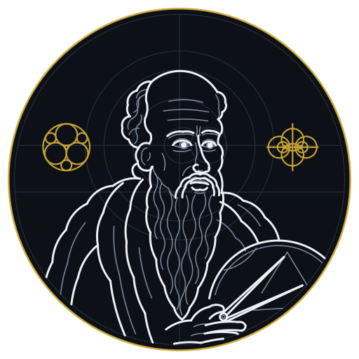

Apollonius of Perga¶

Apollonius of Perga (The Great Geometer, c. 262 – c. 190 BCE) transformed classical geometry by deriving the parabola, ellipse, hyperbola, and opposite branches from a single oblique cone. This archive unites Sir Thomas Little Heath’s critical edition of the seven surviving books of the Conics with reconstructions of Apollonius’s six lost analytic treatises preserved by Pappus of Alexandria, paired with calibrated vector figures and cross-edition concordances.
Works in This Archive¶
Heath Critical Edition · 1896 · Books I–VII · 147 Propositions
Conics (*Κωνικά*) — Apollonius’s masterwork on second-degree curves, spanning cone sections, diameters and asymptotes, harmonic poles and polars, central foci, normals and evolutes, congruence and similarity, and the conjugate-diameter theorems.
Domain of Analysis · Pappus Synagoge VII · 6 Lost Treatises
Reconstructed Analytic Works — Restorations of Apollonius’s six two-book treatises from the ancient Treasury of Analysis: Cutting Off of a Ratio, Cutting Off of an Area, Determinate Section, Tangencies (CCC), Inclinations (Neusis), and Plane Loci.
Key Features¶
12 Calibrated Vector Plates
Interactive geometric diagrams trace oblique cone cuts, application of areas, harmonic polars, the evolute of normals, the Circle of Apollonius, and the eight-solution CCC tangency problem.
Arabic & Greek Witness Concordance
Follow every theorem across Heiberg’s Greek text (Books I–IV), Thābit ibn Qurra and Halley’s Arabic-Latin tradition (Books V–VII), and Heath’s consolidated numbering in the Concordance.
Multi-Track Commentary & Apparatus
Switch seamlessly between Heath’s modernized English text, editorial Summary syntheses, and primary-source Notes tied directly to 1896 folio pages.
Reference & Project¶
Scholarly Apparatus
People — Apollonius, Menaechmus, Euclid, Archimedes, Eutocius, Pappus, Halley, Heiberg, and Heath
Concordance & Bibliography — Proposition cross-reference and critical sources
Glossary — Greek conic terminology (parabole, elleipsis, hyperbole, diorismos)
About This Project
About — Scope, sources, and connection to GEOMETOR
Using This Edition — Reading guide, track switching, and diagram controls
Modules — Python package reference and verification utilities